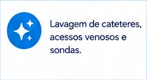
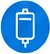
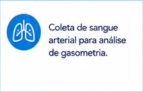
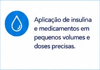
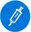
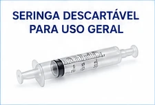

estetoscópio desenhado
Desenho de um estetoscópio representando o tema médico ou de cuidados à saúde.
Categoria: imagem. Tipo: imagem.
Biblioteca com 38 componentes gráficos extraídos e convertidos para WEBP.
Desenho de um estetoscópio representando o tema médico ou de cuidados à saúde.
Categoria: imagem. Tipo: imagem.
Ícone de lâmpada em círculo azul e ilustração de um estetoscópio, ambos representando ideias e área da saúde.
Categoria: icone. Tipo: imagem vetorial.
Ícone de estrela branca dentro de um círculo azul localizado à esquerda do título.
Categoria: icone. Tipo: icone.

Fotografia de uma seringa transparente utilizada na aplicação de medicamentos.
Categoria: fotografia. Tipo: fotografia.
Um ícone circular azul com três formas de estrelas brancas estilizadas no centro, sugerindo brilho ou reluzir.
Categoria: icone. Tipo: elemento gráfico.

Ícone circular azul com três brilhos brancos estilizados, sugerindo limpeza ou esterilização.
Categoria: icone. Tipo: icone.

Fotografia de uma seringa de lavagem, utilizada em procedimentos médicos para irrigação ou limpeza.
Categoria: fotografia. Tipo: fotografia.

Fotografia de uma seringa transparente com tampa escura.
Categoria: fotografia. Tipo: fotografia.
Ícone em formato de escudo azul com um símbolo de check no centro, representando segurança ou proteção.
Categoria: icone. Tipo: imagem vetorial.
Ícone representando um escudo azul com uma marca de verificação branca no centro, sugerindo proteção ou segurança.
Categoria: icone. Tipo: figura geométrica com símbolo.

Fotografia de uma seringa transparente com tampa escura destacada, posicionada horizontalmente.
Categoria: fotografia. Tipo: fotografia.

Fotografia de uma seringa plástica transparente usada para aplicação de líquidos ou medicamentos.
Categoria: fotografia. Tipo: fotografia.

Ícone branco de uma bolsa de soro em fundo azul circular, com traços simples representando o objeto médico.
Categoria: icone. Tipo: icone.
Ícone circular azul com uma representação de uma bolsa de soro intravenoso, frequentemente usada para simbolizar administração de medicamentos intravenosos ou infusões.
Categoria: icone. Tipo: icone.

Fotografia de uma seringa do tipo Luer Lock, utilizada para aplicações médicas.
Categoria: fotografia. Tipo: fotografia.

Fotografia de uma seringa descartável de plástico com detalhes em roxo.
Categoria: fotografia. Tipo: fotografia.
Representação estilizada de um estômago em linhas brancas sobre fundo azul circular.
Categoria: icone. Tipo: imagem vetorial.
Ícone circular azul com contorno de um estômago, representando alimentação enteral e procedimentos relacionados.
Categoria: icone. Tipo: icone.

Fotografia de uma seringa de cateter enteral com fundo branco.
Categoria: fotografia. Tipo: fotografia.

Fotografia de uma seringa de vidro, utilizada para aplicações médicas ou laboratoriais.
Categoria: fotografia. Tipo: fotografia.
Ícone circular azul com ilustração branca representando pulmões humanos estilizados no centro.
Categoria: icone. Tipo: imagem vetorial.

Um ícone em estilo simples representando pulmões, dentro de um círculo azul.
Categoria: icone. Tipo: grafico.

Fotografia de uma seringa utilizada para coletar gases arteriais, destacada em um fundo claro.
Categoria: fotografia. Tipo: fotografia.

Fotografia de uma seringa médica descartável.
Categoria: fotografia. Tipo: fotografia.
Ícone em fundo azul representando um vírus estilizado, geralmente associado a temas de saúde ou microbiologia.
Categoria: icone. Tipo: icone.
Ícone circular azul com o desenho de um vírus ou micro-organismo, utilizado para representar procedimentos médicos ou testes laboratoriais.
Categoria: icone. Tipo: icone.
Ícones circulares utilizados como marcadores de lista para destacar itens de texto.
Categoria: icone. Tipo: icone.

Fotografia de uma seringa tuberculina com graduação visível e fundo claro.
Categoria: fotografia. Tipo: fotografia.

Fotografia de uma seringa com tampa laranja, utilizada para aplicação de medicamentos.
Categoria: fotografia. Tipo: fotografia.
Ícone azul com uma gota de água branca centralizada sobre fundo circular.
Categoria: icone. Tipo: icone.

Ícone de uma gota dentro de um círculo azul, utilizado para representar líquidos como insulina ou medicamentos.
Categoria: icone. Tipo: figura.

Fotografia de uma seringa de insulina com tampas laranjas nas extremidades.
Categoria: fotografia. Tipo: fotografia.

Fotografia de uma seringa plástica transparente com graduação visível.
Categoria: fotografia. Tipo: fotografia.

Ícone branco de uma seringa em um círculo azul, representando vacinação ou injeção.
Categoria: icone. Tipo: imagem vetorial.
Ícone branco de uma seringa dentro de um círculo azul, representando procedimentos médicos ou administração de medicamentos.
Categoria: icone. Tipo: icone.

Imagem fotográfica de uma seringa plástica utilizada para uso geral.
Categoria: fotografia. Tipo: fotografia.
Círculo azul com a letra 'i' em branco no centro, representando um ícone de informação.
Categoria: icone. Tipo: icone.
Ícone combinando uma calculadora com um estetoscópio, representando cálculo ou finanças na área da saúde.
Categoria: icone. Tipo: imagem vetorial.